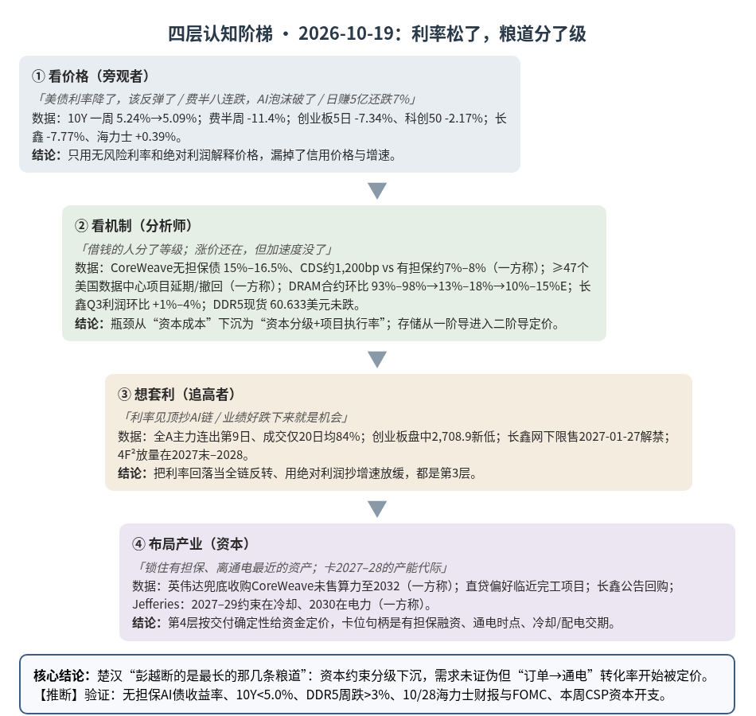
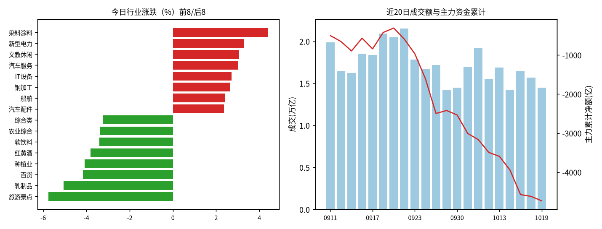
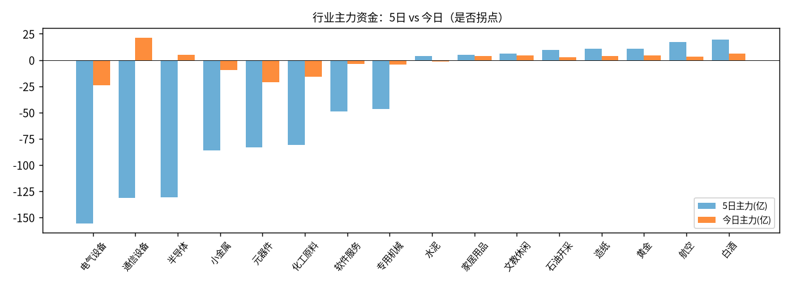

A股投研日报 · 2026-10-19（四层认知版）
资本约束正在“下沉”——无风险利率一周回落约 15bp（10 年美债 5.24%→5.09%），但最弱借款人的信用价格飙到 15%–16.5%、美国至少 47 个大型数据中心项目延期或撤回；同一天，长鑫三季度利润环比仅 +1%–4%，DRAM 合约涨幅从一季度的 93%–98% 收窄到三季度的 13%–18%。AI 硬件链的定价正从“缺不缺”转向“涨价还能不能加速、借来的钱能不能变成通电的机柜”：A 股科技资金连续第 2 日回流却换了仓位（光通信、国产算力进，长鑫、设备、电气设备出），这是二阶导交易，不是一阶导反转。
本报告为基于公开数据的研究分析，不构成投资建议。
方法：四层认知阶梯 + 历史周期律（
cognitive-ladder.md/references/cases.md）。市场数据来自 Tushare Pro（见附录）；产业/宏观数据附来源链接；推断=本文判断；“一方称”=未经独立核验的单方说法；“推算”=本文用公开数字计算。不构成投资建议。
今日市场概况
- 指数：上证指数 +0.39% 收 3,730.92，深证成指 +0.13%，沪深300 +0.09%；成长端弱：创业板指 -0.94% 收 2,746.29（盘中 2,708.9 再创 20 日新低），科创50 -2.17% 收 1,329.19。近 5 日上证50 -1.60%、创业板指 -7.34%，大盘价值明显抗跌（Tushare，见附录）。
- 量能与宽度：成交 14,488 亿元，较上日 -7.7%，约为 20 日均值 17,248 亿元的 84%（推算）；上涨 2,275 家 / 下跌 3,129 家（上涨占比 40.9%，上日 59.3%）。
- 主力资金：全 A 主力（大单+特大单）-113.2 亿元，连续第 9 日净流出。
- 行业：资金流入居前为通信设备 +21.5 亿（价 +1.0%）、白酒 +6.0 亿、黄金 +4.6 亿（价 +2.0%）；半导体价 -1.9% 但主力 +4.7 亿（连续第 2 日净流入，其中长鑫科技一只就 -13.6 亿，剔除后约 +18 亿量级，推算）；流出居前为电气设备 -24.2 亿（连续 5 日，5 日 -156 亿）、元器件 -21.3 亿、化工原料 -16.1 亿。涨幅居前多为小体量题材：染料涂料 +4.4%、新型电力 +3.3%、文教休闲 +3.1%，盘面上兵装重组、减速器、人形机器人活跃，存储芯片调整 源。
- 龙虎榜 / 北向：机构专用席位合计 +10.67 亿元，净买入居前超声电子（+3.39 亿）、天津普林（+1.97 亿），均为 PCB 链。北向每日净买入自 2024 年 8 月起不再披露，今日成交口径数据截至发稿未更新（待补充）。
- 海外与宏观：上周五美股 AI 链重挫——纳指 -2.15%、费城半导体指数 -3.83% 收 11,137.29，八连跌为 2008 年以来最长，周跌 11.4%；CoreWeave -12% 源源。今日 KOSPI 低开逾 3% 后翻红，收 5,768.01（+1.76%），三星电子 +1.16%、SK 海力士 +0.39% 源源；日经 -0.62% 源。10 年美债 10/16 官方收益率 5.09%（10/9 为 5.24%）源源，周一盘中约 5.079%；CME FedWatch 隐含 10/28 不加息概率超 85% 源，12 月加息概率约 89% 源。DDR5 16Gb 现货均价 60.633 美元（+0.05%），DDR4 16Gb 83.414 美元（-0.29%）源。布伦特 108.40 美元（-1.3%）源；现货金约 4,171.65 美元（+0.2%）源。国内：三季度 GDP 同比 4.5%（二季度 4.3%），前三季度 4.6% 源；央行在金融街论坛宣布设立非银机构大额赎回流动性支持工具、推进银行间与交易所债市互联互通 源；中债 10 年国债 1.6497% 源，中美 10 年利差约 343bp（10/15 约 355bp，推算）；人民币中间价 6.7208 源。
变化点
与上一交易日（10/16）相比：
- 中国存储与韩国存储首次“分道”：长鑫科技由 +3.28%（主力 +9.8 亿）转为 -7.77% 收 41.52 元（主力 -13.6 亿，成交 180.98 亿元居全 A 第一）源，SK 海力士 +0.39%。上周两者同跌是共同因子（折现率），今天是个体因子（利润环比几乎不增）。为何重要：市场开始给存储定价“二阶导”，直接碰到 HBM 页“2027 年 HBM 涨价靠 DDR5 抢晶圆”的杠杆（变化二）。
- 科技资金连续第 2 日回流，但换了仓位：通信设备主力 +7.9 亿→+21.5 亿，半导体 +31.9 亿→+4.7 亿，电气设备 -4.3 亿→-24.2 亿；宽度 59.3%→40.9%。为何重要：10/16 验证点 1 的“资金连续第 2 日”命中，但创业板未收复 2,800、盘中跌破 2,744——资金确认、价格未确认。
- 亚洲对美股利空“钝化”：费半周五 -3.83%，KOSPI 低开翻红 +1.76%；外资净卖 SK 海力士 2,176 亿韩元、净买三星 1,720 亿韩元 源——韩国内部也在 HBM 纯度高与通用 DRAM 敞口大之间换手推断。
与上周相比：
- 利率松、信用紧：10 年美债一周 -15bp（5.24%→5.09%），但 CoreWeave 2032 年无担保债一度跌至 75 美分、收益率约 16.5%，五年 CDS 约 1,200bp；有担保数据中心债约 7.2%–8.4%，两档资金价格相差 8–9 个百分点（一方称）源源。为何重要：10/15 的“瓶颈迁移到资本成本”在细化——卡住的是靠举债扩张的那一层。
- “资本→物理执行”的第一批证据：美国至少 47 个大型数据中心项目延期或撤回、微软因英国电网 2030 年后才能供电退出 Nscale 50MW 租约（均一方称）源。上周只是“杀估值”，本周开始出现“项目执行率”信息。
- 防御与主题的周度轮动成形：航空 5 日 +8.4%（主力 +17.1 亿）、白酒 5 日主力 +19.4 亿、黄金 +11.0 亿；电气设备、通信设备、半导体 5 日合计约 -418 亿；全 A 5 日主力约 -1,239 亿（前 5 日约 -998 亿，推算）。
一、世界观定位（先问三句）
- 属于哪一阶段？三国鼎立→楚汉之争过渡带，今日是“楚汉·粮道分级日”（无阶段切换信号）。
- 三国层（科技/产能）实物端仍未证伪：DDR5 现货自 10/14 的 60.10 美元到今日 60.633 美元、累计 +0.9%（推算，源）；ASML 称客户订货意向已排到 2030 年（一方称）源；海力士三季度营业利润一致预期约 76.96 万亿韩元、利润率约 78.4%，财报 10/28 发布（更正：10/16 报告写的 10/24 有误）源。
- 楚汉层（金融）出现分化：无风险利率在松，信用利差在紧；中国侧央行新设非银流动性工具、10 年国债约 1.65%——“关中粮仓”在加固。
- 命中哪个历史原型？——沿用“萧何转漕 + 彭越断粮道”，今日补一处细化：彭越断的从来不是关中主粮道，而是最长、最依赖外援的那几条。
- 剥结构：同样修数据中心，有现金流的超大云厂与举债扩张的新云厂拿到的资金价格相差约一倍（有担保约 7%–8% vs 无担保约 15%–16.5%，一方称）——资本约束是分级的，不是均匀的。
- 为何不换原型：结构仍是“战力（订单/技术）vs 粮道（融资）”的楚汉相持；新信息只是粮道内部分了层，属细化不属替换。
- 验差异：现代版多了“循环融资”（供应商投资+担保客户买芯片）——英伟达承诺在 2032-04-13 前收购 CoreWeave 未售出的算力，CDS 仍隐含约六成五年违约概率（一方称，路透）源——风险没有消失，而是回流到了卖方。
- 领先指标指向？ 金融约束“利率端缓和、信用端收紧”；中国侧政策流动性加码。纪律：方向≠节奏——这是年度维度的“谁的资本更便宜”问题，不是日线信号。回退条件：10 年美债连续回到 4.8% 以下、CoreWeave 类无担保债收益率回到 10% 以下且 CSP 上调资本开支 → 瓶颈回到物理端，“资本分级”降级；DDR5 现货周跌 >3% 或 CSP 季报下调资本开支 → 改判为“需求端出问题”。
二、变化一（主变化）：资本约束下沉——利率松了，信用和项目执行率在收紧
第1层 · 看价格
- 标志性话语：「美债利率降了，科技该反弹了」「费半八连跌，AI 泡沫破了」。
- 数据：10 年美债周降约 15bp 至 5.09%；同期费半周跌 11.4%、纳指周跌 4.48% 源；A 股创业板指 5 日 -7.34%、科创50 今日 -2.17%；半导体与通信设备资金连续第 2 日净流入（+4.7 亿、+21.5 亿）。
结论：第1层看到“利率降了价格还在跌”，于是要么喊反弹、要么喊泡沫；两者都用无风险利率解释，漏掉了信用价格。
第2层 · 看机制
- 标志性话语：「不是钱贵了，而是借钱的人分了等级——借不到便宜钱的那一层，订单再多也变不成通电的机柜」。
- 瓶颈推导（续 10/15 的 TOC 链：晶圆→存储→电力→资本，今日把“资本”拆成两层）：
- ①无风险利率层（松）：10 年美债 5.24%→5.09%；布伦特回落 1.3% 缓解通胀担忧；10 月加息概率约 15% 源。
- ②信用层（紧）：CoreWeave 债务约 500 亿美元（LSEG），无担保债收益率 15%–16.5%、CDS 约 1,200bp；直贷基金前 9 个月募资 1,291.5 亿美元（+35%）但三季度放贷量同比 -28%（PitchBook/LCD）；凯雷称私募信贷或需为约 1 万亿美元 AI 算力建设融资（一方称）源。估值端同步：部分投资者讨论 Anthropic IPO 估值约 1.5 万亿美元（此前约 2 万亿），起因是 Q3 营收环比增速放缓至 45%（路透）源。
- ③项目执行层（新出现的传导）：Jefferies 预计北美 2026 年新增投运仅 12.9GW、2027 年 18GW，而在建约 65GW、宣布约 361GW；约束随时间从劳工（2026）→冷却设备（2027–2029）→电力（2030）迁移（一方称）源；联博估在建/规划项目仅约 35% 能落地，JLL 称全球 57% 项目延期 ≥3 个月（一方称）源。
- ④A 股传导（换仓而非撤离）：通信设备内部亨通光电（+18.8 亿）、新易盛（+8.6 亿）流入，工业富联（-3.0 亿）、天孚通信（-5.4 亿）流出；半导体内部国产算力（寒武纪 +7.9 亿）与存储模组流入、设备（长川 -3.4 亿、北方华创 -0.9 亿）流出（Tushare moneyflow，推算）。推断资金在押“已签订单、交付确定”的环节，减持“依赖下游继续扩产”的环节（设备、电气设备）。
- 风险敞口接口：今日脚本事件经复核有效断供 Δ$≈0（见第五节），物理瓶颈未恶化——今天的约束全部来自资本与执行层，不来自断供。
结论：瓶颈没有回到物理产能，而是从“资本成本”下沉为“资本分级 + 项目执行率”。需求（订单、现货）尚未被证伪，但“订单→通电”的转化率开始被定价推断。
第3层 · 想套利
- 标志性话语：「利率见顶了，抄 AI 链」「CoreWeave 跌了一半，抄底高收益债」。
- 想赌利率见顶→发现：10Y 仍在 5.0% 之上，12 月加息概率约 89%；且决定新云厂扩张的是 15% 级别的信用价格，不是 5% 的国债。
- 想抄高收益债→发现：散户无法参与私募信贷与 CDS；公开债的回报取决于英伟达兜底条款与客户合同续约，信息不对称极大（一方称，路透）。
- 想追 A 股“资金回流”→发现：资金只回流 2 日、全 A 仍连出第 9 日、成交只有 20 日均的 84%，创业板盘中创新低——资金在换仓，不是增量。
结论：把“利率回落”当成全链条反转 = 第3层；路径被「信用分级 + 存量换仓 + FOMC/财报日历」焊死。
第4层 · 布局产业
- 标志性话语：「在执行率被证实之前，锁住有担保、离通电最近的资产」。
- 资本动作：英伟达用“兜底购买未售算力至 2032 年”给 CoreWeave 修粮道（一方称）；直贷机构偏好“接近完工、障碍少”的项目，要求更高补偿（SMBC，一方称）源——第4层的人在按交付确定性给资金定价，这与案例7字节“锁低成本长债”同构。
- 格局含义（非个股建议）：受益方向偏“已在通电/已预租的产能”与“冷却、配电设备”（Jefferies 把 2027–2029 的约束放在冷却），受压方向偏“宣布量大、融资依赖高”的新云与其上游扩产链推断。
结论：第4层在用资产负债表和抵押品给“执行率”定价；卡位句柄是有担保融资、通电时点和冷却/配电交期，而不是指数反弹。
检查清单应用：缺口性质 = 信用缺口是人为/金融缺口（风险偏好、抵押结构、联储路径），可快速反转，需左顾右盼；执行层的劳工/冷却/电网缺口偏准自然缺口（交期以年计），一旦成立更持久。替代弹性 = 融资渠道替代高（无担保→有担保→供应商兜底→股权/IPO），但每一次替代都更贵；算力选址替代中等（电网受限地区→有电地区）。领先 vs 滞后 = 领先：无担保 AI 债收益率与 CDS、项目延期/撤回清单、CSP 资本开支指引、冷却设备交期；滞后：台积电与存储厂季度营收、费半日线。
与案例库交叉验证（变化一）
| 案例 | 案例核心论点 | 今日数据 | 判定 |
|---|---|---|---|
| 案例7 字节296亿贷款（楚汉层） | 融资时机=alpha；利率上行时替代弹性改变 | 有担保 7%–8% vs 无担保 15%–16.5%；Anthropic 估值讨论下调 | 强化：资本分级，先锁到便宜长钱的人占优 |
| 案例4 AI用铜 | 需求端结构变化，但看替代弹性 | 2026 北美新增投运 12.9GW vs 在建 65GW（一方称） | 节奏削弱、方向待补充：执行率决定铜缆/铜箔放量节奏 |
| 案例3 装片机/键合机 | 订单≠收入；设备节奏领先放量 | 设备股资金流出（长川、北方华创）；韩设备商积压订单翻番（财联社，一方称） | 分化：韩系订单强 vs A 股设备资金撤，待补充订单数据 |
| 案例8 另类数据 | 过程领先结果 | 项目延期清单、CDS 先于财报反映执行风险 | 强化 |
三、变化二（中国账本）：存储进入“二阶导”交易——长鑫利润环比几乎不增，与海力士首次分道
第1层 · 看价格
- 标志性话语：「日赚近 5 亿还跌 7%，市场疯了」「存储周期见顶了」。
- 数据：长鑫预告前三季度营收 2,650–2,700 亿元、归母净利润 1,310–1,325 亿元 源；今日 -7.77% 收 41.52 元，盘中市值跌破 3 万亿元 源；自 9/30 的 54.79 元累计约 -24%（推算）。SK 海力士 +0.39%；10/15 以来长鑫 -4.7%、海力士 +1.2%，相对跑输约 6 个百分点（推算）。
结论：第1层只看到“利好兑现大跌”，把它读成见顶或错杀；没看到跌的是增速，不是利润。
第2层 · 看机制
- 标志性话语：「涨价还在，但涨价的加速度没了——存储股交易的是加速度」。
- ①价格二阶导：DRAM 合约价环比一季度 +93%–98%、二季度 +58%–63%、三季度 +13%–18%（证券时报转述，一方称）源；TrendForce 预计四季度常规 DRAM 合约价 +10%–15%，并明确“涨幅放缓”、服务器 DRAM 仍供不应求 源。现货端 DDR5 16Gb 60.633 美元、当日 +0.05%，没有转跌。
- ②利润二阶导：长鑫三季度归母净利润约 533.95–548.95 亿元，环比 +1%–4%，二季度环比 +113%（证券时报）源。另一解释（一方称，第一财经转述）：新增产能集中在上市公司持股较低的北京、合肥二期工厂，利润流向少数股东，叠加老产线技改与 HBM 研发占用产能——即“合并口径强、归母口径弱”。两种解释都指向同一件事：归母利润的弹性小于行业价格的弹性。
- ③韩国侧对照：海力士三季度营业利润预期 76.96 万亿韩元、利润率约 78.4%，但近 3 个月一致预期下调 5.6%（韩元走强）源；上周的“长鑫冲击”来自 4F² DRAM 发布，但未披露产能与量产时间，韩媒称有意义的量最早 2027 年末、更现实是 2028 年上半年（一方称）源。
- ④与 HBM 页的接口：HBM 页核心判断是“2027 年 HBM 只是略紧，涨价靠 DDR5 抢晶圆（晶圆机会成本）”。若常规 DRAM 环比涨幅继续从 13%–18% 降到 10%–15% 乃至持平，HBM 2027 年合约的“对齐普通 DRAM 晶圆产值”这根杠杆就会变弱推断——方向不变（仍在涨），力度是今天新出现的风险点。
结论：存储周期没有反转（现货未跌、合约仍涨），但已从“一阶导（涨不涨）”进入“二阶导（还能不能加速）”定价阶段；中国账本上，长鑫的扩产在赚通用 DRAM 的钱，HBM 收入仍可忽略（与 HBM 页预测 C3 一致，待年报验证）。
第3层 · 想套利
- 标志性话语：「业绩这么好，跌下来就是机会」「长鑫抢份额，做多长鑫空海力士」。
- 发现①：长鑫流通筹码有限——上市时可流通约 45.03 亿股，网下限售 15.21 亿股 2027-01-27 解禁 源——情绪与筹码节奏会放大“二阶导”交易（同案例9 筹码结构）；②今日成交 180.98 亿元为全 A 最高，说明分歧在高位放量释放；③“份额迁移”对冲在 10/15–10/19 反向亏损约 6 个百分点（推算），4F² 放量在 2027 年末以后，现在不是份额兑现期。
结论：用“绝对利润”去抄“增速放缓”= 第3层；路径被「二阶导下行 + 解禁日历 + 4F² 放量时点在 2028」焊死。
第4层 · 布局产业
- 标志性话语：「不赌一个季度的增速，卡的是 2027–2028 的产能与工艺代际」。
- 国资与产业基金在 2022–2024 寒冬注资已完成卡位（见 10/15）；今日公司同步公告回购计划（证券时报）源——这是发行人自身在“二阶导恐慌”时的资本动作。上游侧，长鑫扩产拉动国产设备/材料验证（一方称，见 10/15）；但今日 A 股设备资金流出，说明市场开始区分“已拿订单”与“等扩产”推断。
结论：第4层看的是 4F² 与扩产节奏（2027 年末–2028）和回购托底，不是三季度环比；今日价格对卡位逻辑影响有限。
检查清单应用：缺口性质 = 常规 DRAM 缺口主要是三大原厂向 HBM/服务器倾斜造成的人为缺口（同案例2 钾肥：寡头控量缺口可被新进入者填补、价格动能先于价格本身见顶）；HBM 仍是技术壁垒型准自然缺口。替代弹性 = PC/手机端已在降规格、减容量对冲涨价（TrendForce），消费端替代弹性在上升；服务器端弹性低。领先 vs 滞后 = 领先：合约价环比斜率、DDR5 现货、韩国半导体出口同比、原厂资本开支；滞后：长鑫/海力士季度利润、股价。
与案例库交叉验证（变化二）
| 案例 | 案例核心论点 | 今日数据 | 判定 |
|---|---|---|---|
| 案例2 钾肥（人为缺口可反转） | 寡头控量缺口随时可反转，拐点先于价格见顶出现 | DRAM 合约环比 93%–98%→13%–18%→10%–15%E | 强化：动能已在衰减，价格尚未转跌 |
| 案例9 宇树（筹码结构） | 流通盘与解禁决定价格节奏 | 长鑫可流通 45.03 亿股；网下限售 2027-01-27 解禁 | 强化：二阶导交易被筹码放大 |
| 总纲 三国→楚汉 | 资本成本决定科技竞争的速度 | 中美利差约 343bp；央行新设非银流动性工具 | 维持：中国侧粮道更稳，但不改变周期二阶导 |
四、上一交易日验证点回顾（10/16 → 10/19）
| # | 验证点 | 今日读数 | 判定 |
|---|---|---|---|
| 1 | 半导体或通信设备主力连续第 2 日流入，且创业板收复 2,800/2,866 | 两者均连续第 2 日流入；创业板收 2,746，盘中 2,708.9 跌破 2,744 | 资金命中、价格未命中：不确认 |
| 2 | 10Y 连续 2 日 <5.0% | 5.09%（10/16）、盘中约 5.079%（10/19） | 未达标，高位胶着 |
| 3 | DDR5 本周累计跌幅 >3% | 自 10/14 起 +0.9% | 维持「杀估值不杀订单」 |
| 4 | 海力士季报口径 | 财报日更正为 10/28（与 FOMC 同日） | 待验证 |
| 5 | 长鑫相对海力士 5 日跑赢逼近 10pct | 两日累计约 -6pct（反向） | 否：份额迁移未被交易，改为二阶导交易 |
| 6 | 航空一日游检验 | 主力连续第 2 日流入（+3.0 亿），价 +1.1%；无可核验大额合同公告 | 未降级，仍属主题观察 |
| 7 | 量能回到 20 日均以上 | 14,488 亿，<1.6 万亿 | 存量轮动不变 |
五、供应链风险敞口（人工复核版）
脚本版见
risk_section_20261019.md。口径为 GB300/NVL72 当量柜年化系统价值；Δ$ 为事件类型假设模板，仅用于排序，非预测。
- 基线：年化 EL $5.77B（约 ¥388 亿），VaR95 $21.73B；EL 第一节点仍为 Nittobo T-glass（福岛）$1.81B，其后为中际旭创光模块 $0.87B、台积电晶圆厂 $0.58B、Ibiden ABF 载板 $0.52B。
- 今日事件复核：①USGS 记录四川江油西北 31km M5.0 浅源地震（北京时间 18:57，深度约 10km）源，中国地震台网正式测定为北川 4.1 级、深度 11km 源；脚本按 300km 半径匹配到新易盛（成都）光模块节点，震中距成都约 150–160km（推算），无 PAGER 预警、截至发稿无损失报道——Δ$≈0，列为观察；且发生在收盘后，与今日新易盛 +8.6 亿主力无关。②“村田扩建 MLCC、台积电扩产推进”“韩国设备商积压订单翻番”为产能正面信息；“海力士推迟部分 HBM4 后道设备”为重复旧闻（一方称）——均不计断供 Δ$。复核后今日有效断供 Δ$≈0。
- 供第 2 层使用：物理断供端平静，最紧单点仍是 T-glass（份额约 90%、新产能最早 2027 年中，参数为假设）；今日风险全部来自资本与执行层（见变化一），与“断供”是两类风险，不能相加。
- 采集降级：GDELT 部分限流、巨潮超时（可接受失败）。
中长期展望
3–12 个月（到 2027 年中）： - 强化的趋势：①资本分级——AI 基建融资从“有没有钱”变成“谁拿得到便宜钱”，有现金流的大云厂与有担保项目占优，新云/高杠杆环节承压（变化一）；②执行层约束前移——Jefferies 把 2027–2029 的约束放在冷却设备、2030 放在电力（一方称），与 CoWoS 页 TOC 推导“电力余量从 2026 年约 +30%～+55% 降到 2027Q4 约 −1%、2028 年可能轮到电力”方向一致，今日证据强化“下一站是电力/冷却”的判断推断；③中国侧低成本资本——中美 10 年利差约 343bp、央行新增流动性工具，长鑫扩产资金对联储不敏感（维持 10/15 判断）。 - 减弱的趋势：①存储价格加速度——合约环比斜率从 93%–98% 降到 10%–15%E，HBM 页“2027 年 HBM 涨价靠晶圆机会成本”的力度可能被削弱（方向不变，幅度待验证，TrendForce 2027 年 HBM 混合均价 +121% 的预测面临下修风险推断）；②**“订单=收入”的线性外推**——宣布量（约 361GW）与可投运量（2027 年约 18GW）之间的落差，意味着 CoWoS/HBM 需求的“客户需求口径”比“可见出货口径”更容易被高估（CoWoS 页已用两套口径，今日支持以出货口径为基准）。 - 未变的判断：CoWoS 页“2027 年最紧一环是 ABF 载板（估）”今日无新证据（载板/T-glass 数据待补充）；HBM 页“2027 年只略紧（满足率约 90%）、周期顶部看 2027 年下半年”今日证据偏向“顶部的加速度先到”，不改结论。说明：本报告只做方向标注，不改动 HBM/CoWoS 页的核心判断与模型数字（改动需 John 批准）；Jefferies 新增投运口径（2026 年 12.9GW、2027 年 18GW）与 CoWoS 页电力环节“北美新增吸纳 GW/季”的口径疑似不一致，建议列入本周五链条跟踪核对。
走向 2027： - 利润迁移的方向更清楚了：从“扩得慢的物理环节”（载板、HBM）继续向“把钱和电变成机柜的环节”（有担保融资、冷却、配电、并网）扩散推断；中国账本上，2027 年 HBM 仍严重短缺（HBM 页约 13%），长鑫赚的是通用 DRAM 的钱，4F² 放量在 2027 年末–2028 年上半年（一方称），是 2028 年的供给变量而不是 2027 年的。 - 什么会改变展望：①本周起 CSP 三季报（Meta 本周；微软、谷歌、亚马逊稍后）若下调 2027 年资本开支 → 需求端下修，“资本分级”升级为“需求收缩”；②10/28 海力士财报若给出 2027 年资本开支上修且 HBM 合约价大涨 → 存储二阶导担忧缓解；③四季度常规 DRAM 合约实际涨幅 <10% 或 2027Q1 指引持平/下跌 → HBM 晶圆机会成本杠杆失效，需重估 HBM 页价格判断；④CoreWeave 类无担保债收益率 >18% 或出现新云违约 → 信用传染，2027 年加速器出货假设需下调；⑤10/28 FOMC 加息 → 无风险利率层重新收紧。
六、机会表（产业/环节层面，不构成投资建议）
| 机会 | 变化信号 | 认知层级 | 关键风险 |
|---|---|---|---|
| “交付确定”的 AI 硬件环节（光通信等已签单环节） | 通信设备主力连续 2 日流入（+21.5 亿） | 第2层（机制观察） | 全 A 仍连出第 9 日；资金仅 2 日 |
| 数据中心冷却/配电/并网（执行层约束） | Jefferies：2027–29 冷却为主要约束（一方称）；47 个项目延期 | 第4层（年度观察） | 口径一方称；电气设备 A 股资金仍连出 5 日 |
| 存储周期二阶导（通用 DRAM） | 合约环比 13%–18%→10%–15%E；长鑫 -7.77% | 第2层已查证 | 现货若周跌 >3% 则升级为一阶导拐点 |
| 国产 DRAM 扩产链（中国账本，2027–28） | 长鑫前三季度营收 2,650–2,700 亿；回购；4F² 2027 末后放量 | 第4层（慢变量） | 2027-01-27 解禁；归母利润分流 |
| “利率降了=AI 全链反转” | 10Y 5.09% 但无担保 AI 债 15%–16.5% | 第3层（陷阱） | FOMC 10/28；12 月加息约 89% |
| 黄金等楚汉层底仓 | 现货金约 4,171 美元；A 股黄金 5 日主力 +11 亿 | 世界观层（不看日线） | 实际利率再上行 |
七、明日/本周验证点（可证伪）
- 信用阀门：CoreWeave 2032 年无担保债收益率回到 12% 以下或 CDS <800bp → 信用层缓和；收益率 >18% 或出现新的新云融资失败/违约 → 信用传染，下调“需求未坏”的置信度。
- 利率阀门：10 年美债连续 2 日 <5.0% → 无风险利率层确认放松；上穿 5.2% → 喘息结束。10/28 FOMC 不加息为基准。
- 现货证伪：DDR5 16Gb 本周累计跌幅 >3% → 推翻“杀估值不杀订单”；持平/上涨 → 维持，且二阶导判断仅限合约端。
- 海力士 10/28：营业利润低于一致预期 76.96 万亿韩元 5% 以上，或 2027 年资本开支下调 → 存储二阶导转为一阶导担忧；上修资本开支 + HBM 2027 合约大涨 → 缓解。
- A 股资金确认：半导体/通信设备主力连续第 3 日流入且创业板收复 2,800 → 弱确认；跌破 2,708.9 → 出清未完。
- 中国存储分化：未来 5 个交易日长鑫相对海力士继续跑输 >10pct → 市场确认按“二阶导”给中国存储定价；收复 45 元（10/16 收盘）→ 今日为情绪性抛压。
- CSP 资本开支：本周 Meta 财报资本开支指引维持或上调 → 执行层问题局限于新云；下调 → 需求端风险升级。
- 量能：成交持续 <1.6 万亿元 → 存量换仓定性不变；回到 1.72 万亿以上且上涨占比 >50% → 增量信号。

一句话总结：利率松了一口，但粮道分了级——看价格的人在争论“该反弹还是泡沫破了”，看机制的人在看信用利差和存储涨价的加速度，想套利的人容易把“利率回落”和“绝对利润”当买点，而布局产业的人在给交付确定性、通电时点和 2027–28 的产能代际定价。
本报告为基于公开数据的研究分析，不构成任何投资建议。
附录：市场数据（证据底稿）


| 收盘 | 今日% | 5日% | 20日% | MA20 | 成交(亿) | |
|---|---|---|---|---|---|---|
| 上证指数 | 3,730.92 | 0.39 | -1.75 | -4.04 | 3,839.88 | 6,870.10 |
| 深证成指 | 11,817.42 | 0.13 | -4.58 | -12.28 | 12,889.09 | 3,544.41 |
| 创业板指 | 2,746.29 | -0.94 | -7.34 | -17.33 | 3,128.62 | 1,291.19 |
| 科创50 | 1,329.19 | -2.17 | -6.84 | -14.43 | 1,520.55 | 687.02 |
| 上证50 | 2,774.30 | 0.22 | -1.60 | -3.28 | 2,827.72 | 1,085.68 |
| 沪深300 | 4,174.53 | 0.09 | -2.65 | -7.44 | 4,369.11 | 3,634.48 |
| 中证500 | 6,800.66 | 0.41 | -4.12 | -10.29 | 7,382.18 | 2,446.12 |
| 中证1000 | 6,698.30 | 0.24 | -4.60 | -9.81 | 7,289.63 | 2,797.92 |
行业资金热力（按5日主力净额排序，前8/后8）
| industry | 今日% | 5日% | 20日% | 今日主力(亿) | 5日主力(亿) | 资金连续天数 |
|---|---|---|---|---|---|---|
| 白酒 | 0.4 | 3.8 | 3.3 | 6.0 | 19.4 | 3.0 |
| 航空 | 1.1 | 8.4 | -1.5 | 3.0 | 17.1 | 2.0 |
| 黄金 | 2.0 | 1.3 | -17.2 | 4.6 | 11.0 | 3.0 |
| 造纸 | -0.1 | -3.5 | 5.4 | 3.8 | 10.8 | 20.0 |
| 石油开采 | 0.2 | 4.1 | -0.1 | 2.5 | 9.7 | 1.0 |
| 文教休闲 | 3.1 | 2.4 | 10.7 | 4.2 | 6.1 | 1.0 |
| 家居用品 | 2.2 | 1.6 | 6.7 | 3.5 | 4.9 | 2.0 |
| 水泥 | -0.9 | 3.7 | 4.4 | -1.4 | 3.6 | -1.0 |
| 电气设备 | -0.5 | -6.6 | -5.7 | -24.2 | -156.0 | -5.0 |
| 通信设备 | 1.0 | -5.3 | -16.1 | 21.5 | -131.7 | 2.0 |
| 半导体 | -1.9 | -8.6 | 12.1 | 4.7 | -130.7 | 2.0 |
| 小金属 | -1.0 | -7.6 | 33.4 | -9.6 | -86.5 | -6.0 |
| 元器件 | 0.1 | -2.7 | -9.4 | -21.3 | -83.5 | -4.0 |
| 化工原料 | -1.4 | -6.9 | -5.0 | -16.1 | -80.8 | -6.0 |
| 软件服务 | 1.2 | -2.0 | 3.9 | -3.9 | -49.2 | -6.0 |
| 专用机械 | 0.7 | -4.1 | 2.3 | -4.3 | -46.5 | -1.0 |
市场情绪时间序列（近10日）
| trade_date | 成交(亿) | 上涨占比% | 主力净额(亿) | 个股中位涨跌% |
|---|---|---|---|---|
| 20260929 | 14216.0 | 62.4 | 76.5 | 0.5 |
| 20260930 | 14500.8 | 46.2 | -116.0 | -0.1 |
| 20261008 | 16942.9 | 30.6 | -471.5 | -1.0 |
| 20261009 | 19166.9 | 59.3 | -158.1 | 0.6 |
| 20261012 | 15507.5 | 21.0 | -329.2 | -1.7 |
| 20261013 | 16889.1 | 52.3 | -99.6 | 0.2 |
| 20261014 | 14264.0 | 17.6 | -348.7 | -1.9 |
| 20261015 | 16457.2 | 7.7 | -629.9 | -3.0 |
| 20261016 | 15690.7 | 59.3 | -47.3 | 0.5 |
| 20261019 | 14487.9 | 40.9 | -113.2 | -0.4 |
今日上涨2275家/下跌3129家，涨幅≥9.8% 63家、跌幅≤-9.8% 38家¹。
龙虎榜侧写：机构专用席位合计 +10.67 亿；净买入居前 超声电子(+3.39亿)、天津普林(+1.97亿)、慈文传媒(+1.61亿)，净卖出居前 振华股份(-0.81亿)、读者传媒(-0.45亿)、皇台酒业(-0.43亿)。
注：¹涨跌停为按±9.8%阈值近似（limit_list_d无权限）。²行业为Tushare stock_basic分类自行聚合（sw_daily/ths_daily/行业资金流接口无权限），成交加权、剔除N/C新股，成分≥8只。³主力=大单+特大单净额（moneyflow）。⁴2024年8月起北向每日净买入停止披露，moneyflow_hsgt/hsgt_top10数值为成交口径，不可解读为净流入。⁵新闻/公告接口无权限，改用新浪财经7x24公开快讯自动抓取+人工补充。
接口状态：trade_cal:OK；stock_basic:OK；index_daily:OK；moneyflow_hsgt:OK；hsgt_top10:OK；top_list:OK；top_inst:OK；index_dailybasic:OK；新浪7x24(公开):OK 1500条